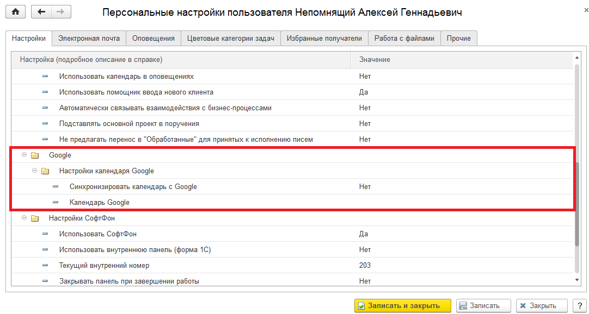
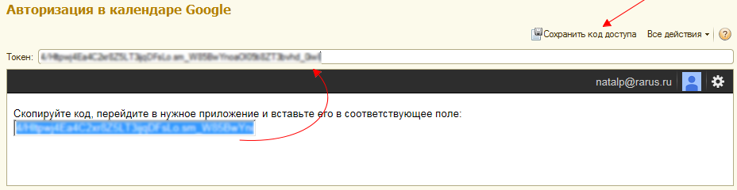
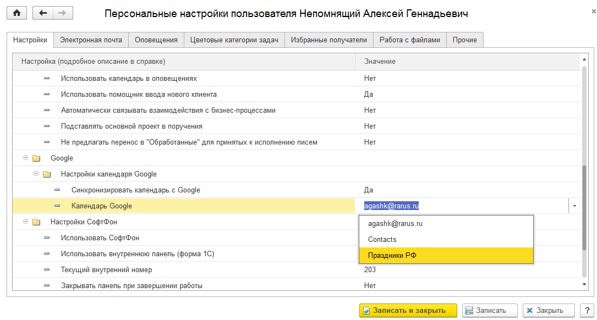

Синхронизация событий 1С:CRM с календарями Google.
Синхронизация событий 1С:CRM с календарями Google.Синхронизация событий 1С:CRM с календарями Google.
Для подключения синхронизации календаря CRM с календарем Google необходимо выполнить ряд настроек:
Важно! Данная почтовая учетная запись будет использоваться как служебная и она не предназначена для работы с почтовыми сообщениями (т.е. она не должна использоваться у других пользователей информационной базы). Почтовая учетная запись должна отвечать следующим требованиям:
- Не использоваться пользователями в качестве рабочей почтовой записи.
- Провайдер учетной почтовой записи должен позволять удалять письма из неё (например, в GMail это действие запрещено, а в yandex.ru, mail.ru и многих других разрешено).



